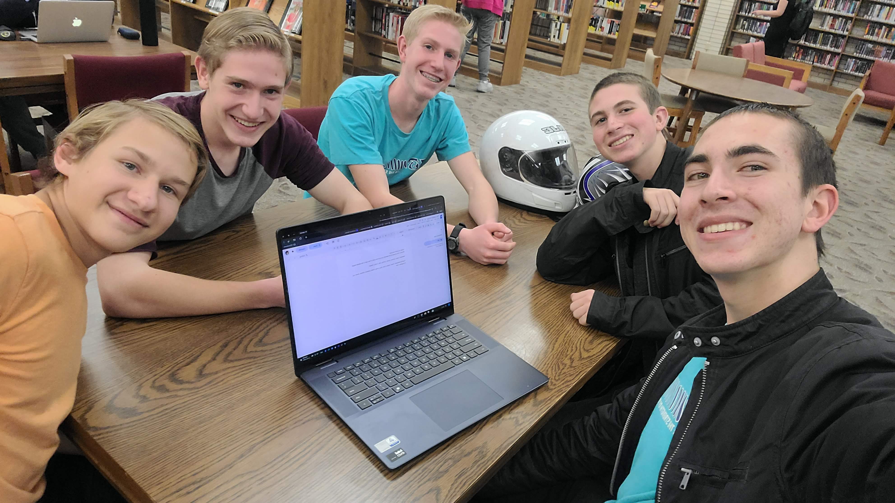
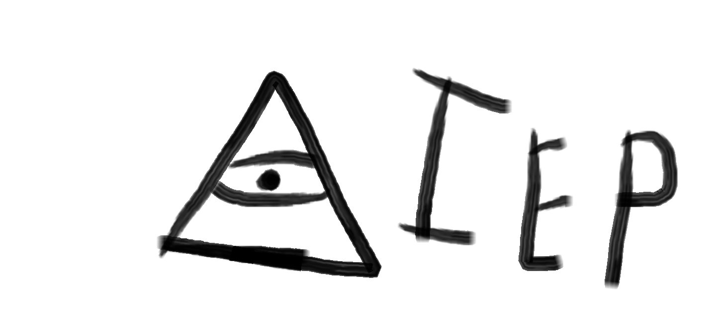

Do you want to be something great?
The Arcanum Messores, also known as the AM, is the group for you. For the past year, we've been quietly growing in the debate league, slowly gaining memembers.

About Us

The Arcanum Messores was founded early last year (2025). The initiall purpose was simply to see what exactly we could do when a group got together and decided to become something more than just themselves.
What we Do
The AM works towards redefining the rules in the IE Program speech and debate league. We are also working towards having summer-time activities for debate students.